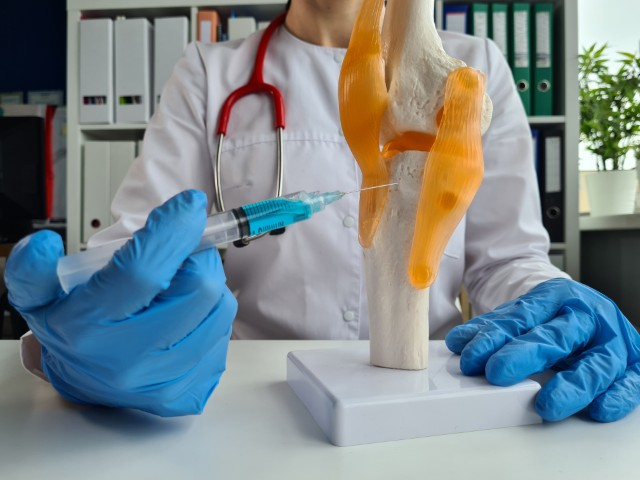

Rheumatology Hospital in Bangalore
Comprehensive Care for Arthritis, Autoimmune Diseases and Joint Pain
Rheumatology is a specialized branch of medicine that deals with autoimmune,
inflammatory and musculoskeletal disorders affecting the joints, bones and connective tissues.
These
conditions can lead to chronic pain, stiffness, swelling and reduced mobility, significantly
impacting daily life. At Rashtrotthana Hospital, we offer expert rheumatology care to diagnose,
treat and manage a wide range of rheumatic and autoimmune diseases, helping patients improve
their
quality of life and prevent long-term complications.
Our Rheumatology Department specializes in the treatment of conditions such as
rheumatoid arthritis, osteoarthritis, psoriatic arthritis, lupus, vasculitis, osteoporosis and
gout.
Early diagnosis and intervention play a crucial role in reducing inflammation, slowing disease
progression and preventing joint damage. We use advanced diagnostic techniques, including blood
tests, autoimmune screenings, imaging studies and inflammatory markers, to provide accurate
diagnoses and customized treatment plans.


Conditions We Treat
Our expert team provides specialized care for a wide range of rheumatic
conditions,
including:
- Arthritis & Joint Disorders - Rheumatoid Arthritis, Osteoarthritis, Psoriatic Arthritis, Ankylosing Spondylitis and Gout
- Connective Tissue Diseases - Lupus, Sjogren’s Syndrome, Systemic Sclerosis
- Vasculitis & Inflammatory Disorders - Blood Vessel Inflammation, Sarcoidosis
- Bone Health & Metabolic Disorders - Osteoporosis, Osteopenia, Vitamin D Deficiency
- Recurrent Pregnancy Losses - Autoimmune-related pregnancy complications
Why Choose Rashtrotthana Hospital for Rheumatology?
- Expert Rheumatology Care - Specializing in autoimmune diseases, arthritis treatment and chronic pain management.
- Comprehensive Diagnostic Approach - Utilizing advanced imaging, autoimmune screenings and lab tests for accurate diagnosis.
- Cutting-Edge Treatment Protocols - Offering biologic therapies, disease-modifying drugs and lifestyle interventions
- Holistic & Personalized Care - Customizing treatment plans to improve overall well-being and joint function